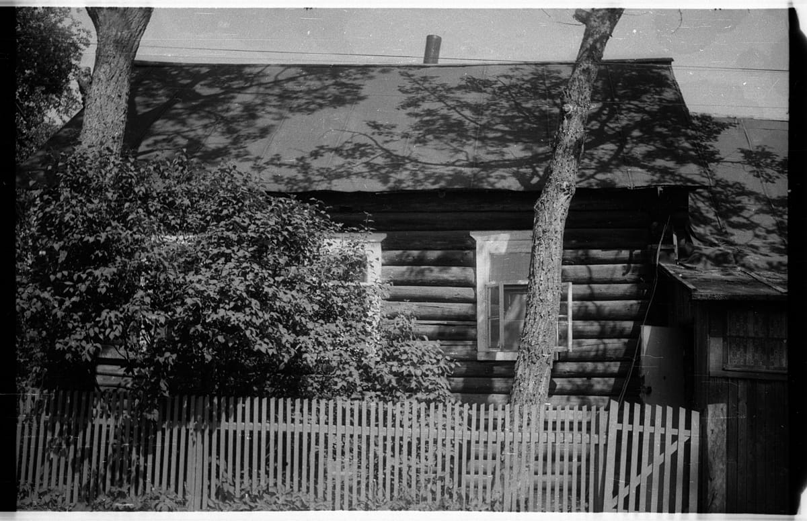
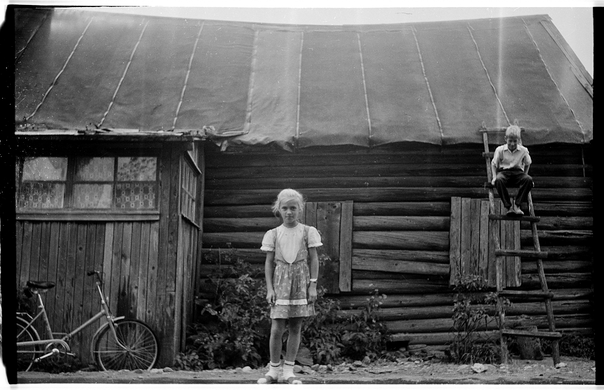
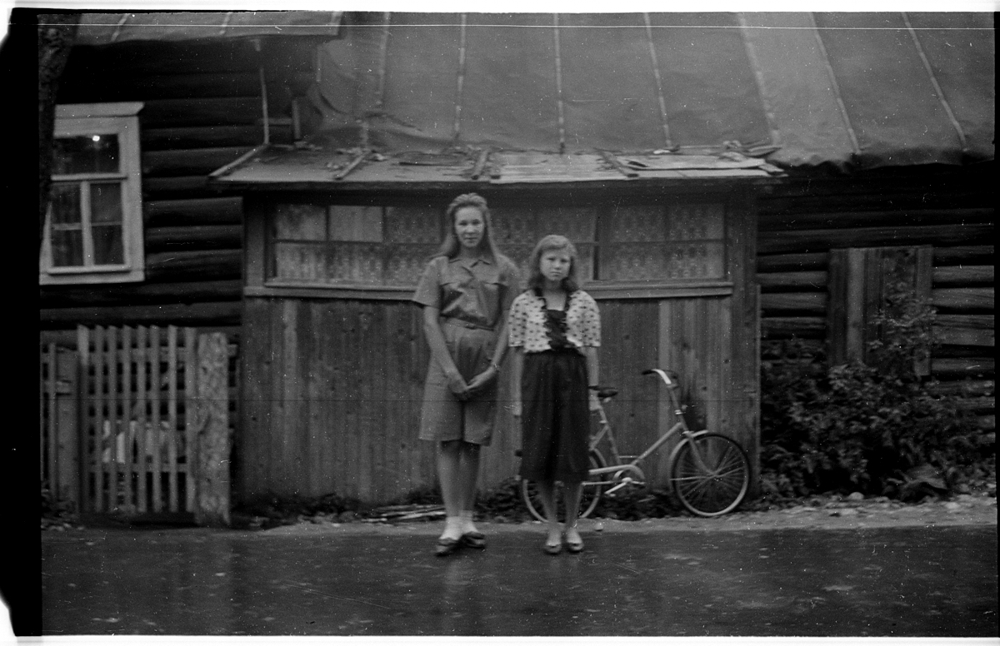
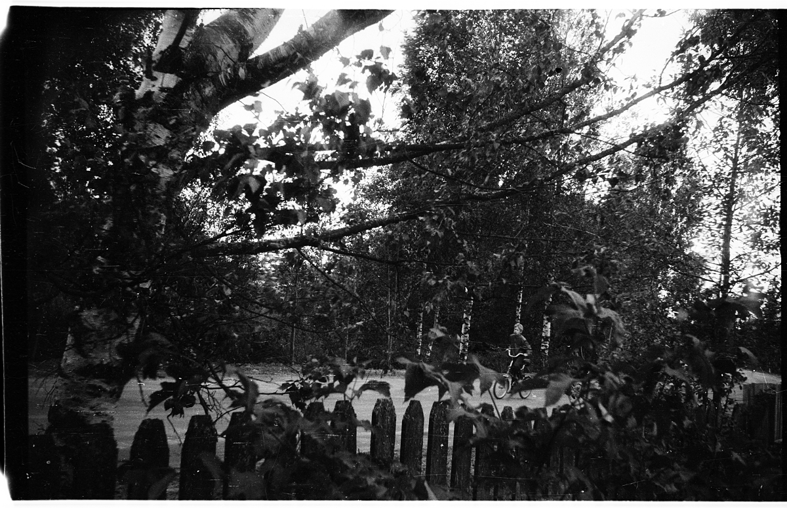
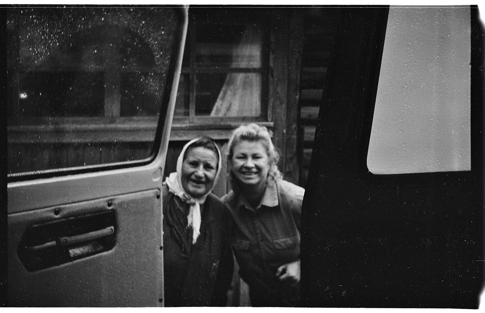
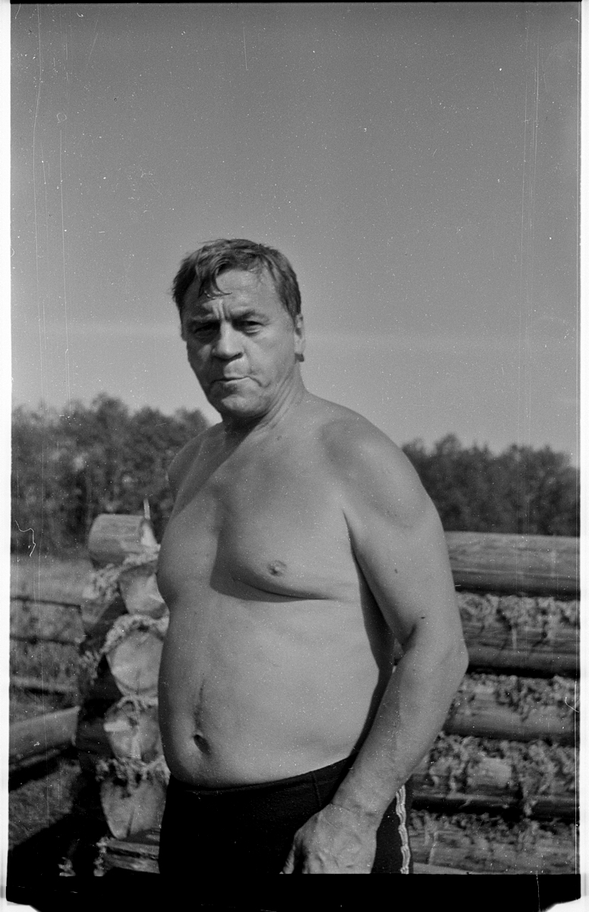
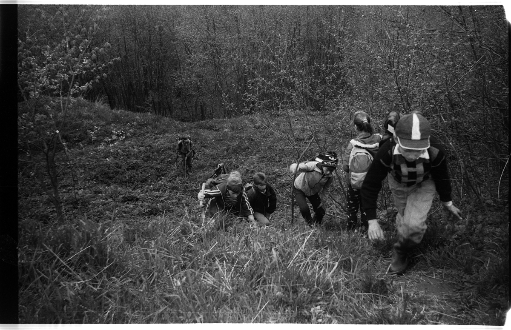
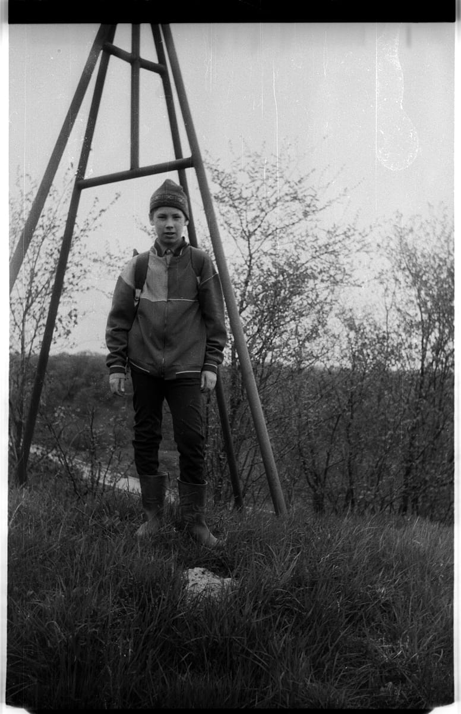
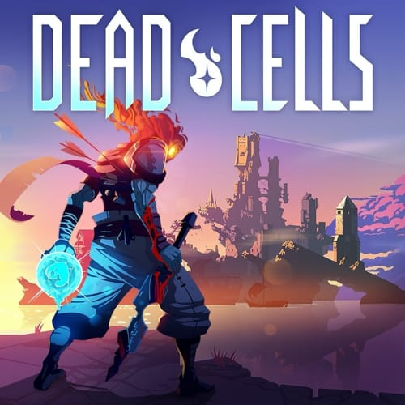
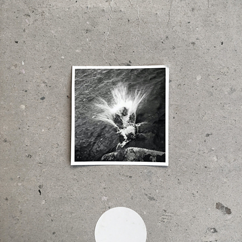

Как я читаю статьи
Я перепробовал кучу разных способов читать интересные статьи:
- Сохранял их в Instapaper, Pocket и Read Later Safari
- Добавлял в Read Later pinboard.in
- Нашел какой-то специальный апп, который позволяет читать только самую первую статью в очереди
- Создавал задачи в Things
Но все это приводило к одному результату — я не мог прочитать все, что добавлял, потому что читал на телефоне, где меня все время что-то отвлекало (да, я знаю про Do Not Disturb), а список непрочитанных статей рос, рос и рос, пока я на него не забивал и не пробовал какой-то новый подход.
Все это продолжалось до тех пор, пока я случайно не узнал, что Instapaper за небольшую плату умеет отсылать статьи на Kindle. С тех пор, раз в неделю, мне "прилетает" новый выпуск текстов, которые показались мне интересными — и это кайф, потому что я успеваю все прочитать, ведь на Киндл никто не пишет, а мне не зудит проверить рабочий чатик, посмотреть почту или узнать как там дела на мировой арене — в общем, Киндл — лучший гаджет эвер!
Читайте!
Angus & Julia Stone — Grizzly Bear
Esbjörn Svensson Trio
Кайф какой.
ps: весь концерт
Space X
Это же просто космос какой-то! Совершенно охренительно!
Немного деталей, если вы не следили.
Школа не для учителя
Катя как-то поделилась со мной забавным роликом о том, как правильно писать слово "коронавирус", а в добавок порекомендовала посмотреть интервью с его автором — бывшим школьным учителем русского языка и литературы Павлом Астаповым.
Интервью классное, рекомендую послушать (даже если вам не очень актуальна тема современной школы):
Старые пленки
Вспомнил, что у меня где-то была фотография мамы, полез копаться в негативах и нашел несколько старых пленок. Эти снимки сделаны мной на фотоаппарат Смена 8М где-то в начале 90-x, мне тогда было лет 13-15 и мы с одноклассником некоторое время ходили в фотокружок, а потом сами проявляли и даже что-то печатали.
Несколько фотографий из деревни Шегрино, где мы с братом проводили каждое лето с конца 80-х и до моего поступления в институт, то есть, до 1997-го.
Жилая часть нашего дома:

Подружка Настя и мой брат Фёдор (на фоне хозяйственной пристройки-сарая, в углу припаркован мой велосипед Салют):

Соседские девчонки Марина и Оля:

Брат куда-то топит на своей Каме:

Баба Дуся и мама. Фотография сделана в конце лета, когда я уже сидел в машине, на которой мы уезжали из деревни домой, а баба Дуся пришла нас проводить:

Папа где-то в процессе строительства бани:

Школьный поход в саблинские пещеры:

Кто-то и меня щелкнул в том же походе:

Такие дела.
Dead Cells

Dead Cells — кайф!
Раскрою чутка:
- Графика и анимация — кайф
- Музыка — кайф
- Геймплей — кайф
Совершенно не ожидал и от этого особенно приятно, так что — рекомендую.
Nils Frahm — Empty (2020)

Отлично работается под него.
Подкасты
В 2019-м я научился слушать подкасты.
Но не как в 2018-м, когда я накачал всего и отовсюду, слушал непрерывно месяца полтора и передознулся так, что некоторое время ничего не мог слушать вовсе. В этот раз я начинал очень аккуратно, решил подписываться только на то, что очень нравится и слушать изредка. В итоге, в концу года у меня на постоянной основе всего четыре подкаста, зато очень крутых:
- Любить нельзя воспитывать. Подкаст Димы Зицера, который вроде бы и не подкаст вовсе, но как и любая многосерийная передача отлично слушается именно в форме подкаста. Эпизодов море, но слушать можно начать в любой момент, потому что каждый эпизод — это разбор только кажущихся уникальными историй слушателей.
- Мемус Решает. Каждый сезон имеет свою тему — первый был про психотерапию, и я как-то удачно попал на самое его начало, а потом просто не смог оторваться. Второй — про Burning Man и только начался.
- Make Sense. Подкаст про продукты и про все, что с ними связано. Редко, когда мне нравятся околорабочие подкасты, но это исключение — и темы, и гости мейксенса очень интересные.
- Легко, просто и подкаст. Топчик, обнаруженный под конец года. Парни увлекательно рассуждают о разном, делятся своим опытом, переживаниями и восприятием мира, рассказывают смешные (и не очень) истории из жизни. Местами клево резонирует.
Пис.